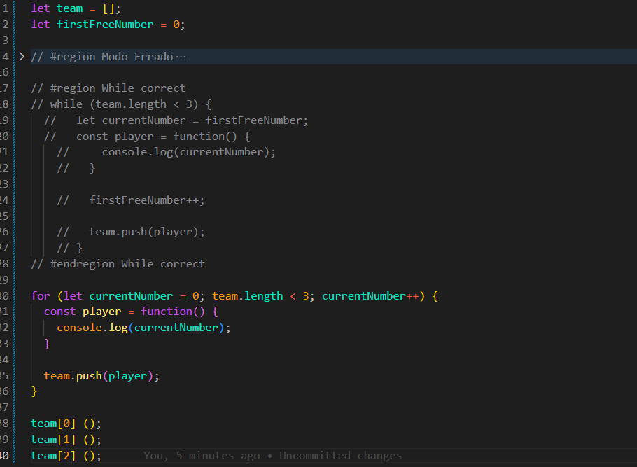

Function in a Loop
Intro
Uso de funcoes em um loop.
Uso de funcoes em um loop.
JS:

let team = [];
let currentNumber = 0;
while (team.length < 3) {
const player = function() {
console.log(currentNumber);
}
currentNumber++;
team.push(player);
}
team[0]();
team[1]();
team[2]();
Com esse código, podemos observar como uma closure mantém acesso à variável externa currentNumber.
let team = []: começamos com um array vazio para armazenar as funções player.
let currentNumber = 0: criamos um contador que começa com o valor 0.
while (team.length < 3) {}: criamos um loop que continuará executando enquanto o tamanho do array team for menor que 3.
const player = function() { console.log(currentNumber); }: criamos uma função e armazenamos essa função na variável player.
A função não é executada nesse momento. Ela apenas é criada e guarda uma referência à variável externa currentNumber.
currentNumber++;: aumentamos o valor do contador em 1 a cada repetição do while.
team.push(player): adicionamos a função armazenada em player ao array team.
Depois que o while termina, temos três funções armazenadas no array.
Quando fazemos team[0]();, team[1](); e team[2]();, estamos finalmente executando essas funções.
O resultado será:
3 3 3
Isso acontece porque as três funções possuem acesso à mesma variável externa currentNumber.
O while termina somente depois que currentNumber chega a 3. As funções são executadas somente depois disso.
Portanto, quando cada função é executada, ela encontra currentNumber com o valor 3.
Esse é um exemplo importante de closure: a função foi criada dentro de um escopo onde currentNumber existia e continua tendo acesso a essa variável quando é executada posteriormente.
let team = []; let firstFreeNumber = 0; while (team.length < 3) { let currentNumber = firstFreeNumber; const player = function() { console.log(currentNumber); } firstFreeNumber++; team.push(player); }
Nesse exemplo, criamos firstFreeNumber para controlar o próximo número disponível.
A cada repetição do while, criamos uma nova variável currentNumber.
Como usamos let dentro do bloco do while, cada repetição possui uma nova variável currentNumber.
A função player é criada dentro desse mesmo bloco e forma uma closure com o seu respectivo currentNumber.
Na primeira repetição, currentNumber recebe 0. Na segunda, recebe 1. Na terceira, recebe 2.
Por isso, cada função armazenada no array consegue acessar seu próprio valor:
team[0](); // 0 team[1](); // 1 team[2](); // 2
firstFreeNumber++ aumenta o valor que será usado na próxima repetição.
Dessa forma, cada função fica ligada a uma variável currentNumber diferente.
Ou
for (let currentNumber = 0; team.length < 3; currentNumber++) {
const player = function() {
console.log(currentNumber);
}
team.push(player);
}
O for também funciona porque o let usado na declaração do for cria uma ligação diferente de currentNumber para cada iteração.
Assim, as três funções também terão acesso aos seus respectivos valores: 0, 1 e 2.
Resumo: o problema anterior acontecia porque todas as funções acessavam a mesma variável currentNumber. Aqui, cada função possui acesso à sua própria variável por meio da closure.